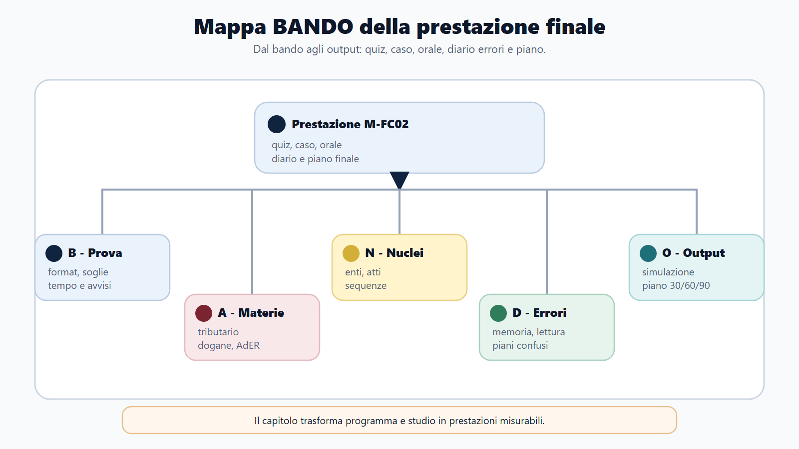
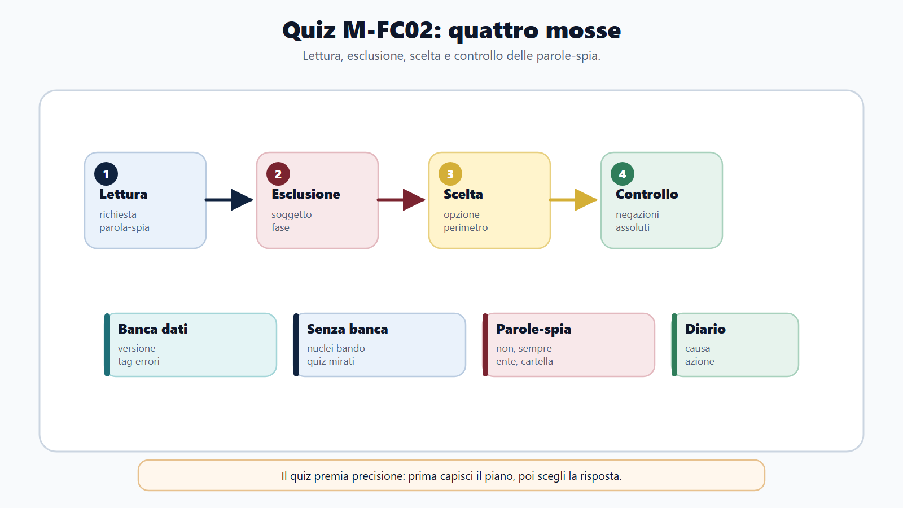
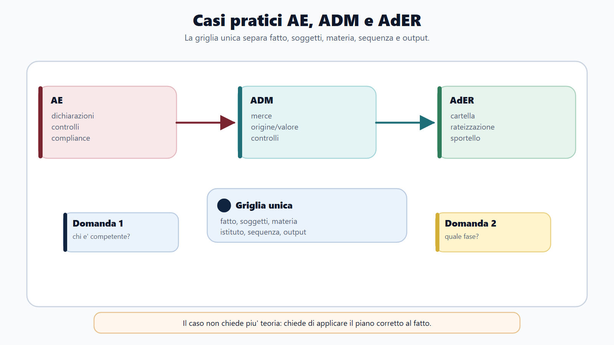
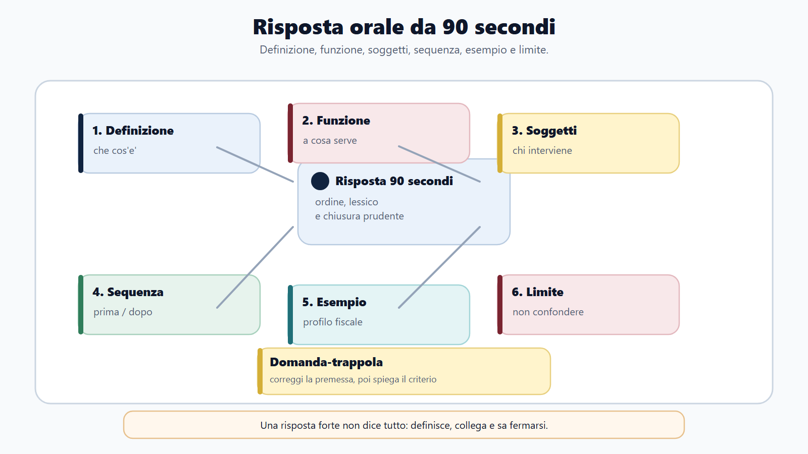
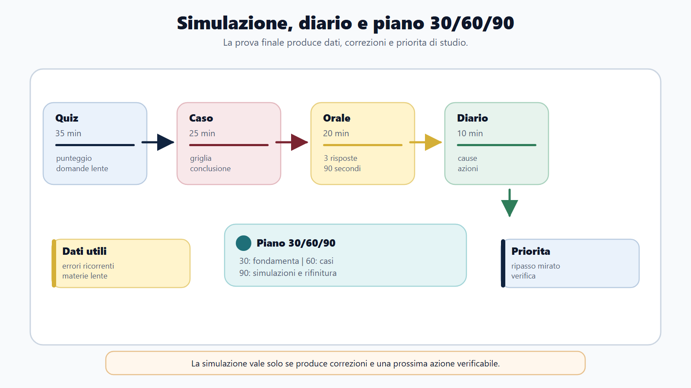

VOL-03 · Capitolo 30
M-FC02
Casi pratici, quiz e orale
nelle Agenzie fiscali
Nei concorsi delle Agenzie fiscali il candidato non viene valutato solo per la quantità di nozioni. Viene valutato per la capacità di riconoscere un problema, scegliere il piano giuridico corretto, usare il lessico dell’ente e restare ordinato quando il tempo è poco.
01 · Il problema in prova
Saper tributario e prestazione concorsuale
Si può conoscere l’IVA, l’accertamento, la riscossione o le dogane e perdere punti se si confonde il soggetto competente, si salta una fase, si usano parole generiche o si risponde come se tutte le Agenzie facessero lo stesso lavoro. Ogni risposta deve tenere insieme ente, funzione, materia e profilo.
Quattro trasformazioni
Dal programma al quesito; dal quesito al ragionamento; dal ragionamento alla risposta; dalla risposta all’errore corretto. Diario errori, griglia orale e piano 30/60/90 raccolgono lo studio in una routine misurabile.
Come usare il capitolo
È un banco di prova, non una lezione da sottolineare. Si riconosce la struttura, si compilano le tabelle con il proprio bando, dopo una simulazione si torna alle sole pagine utili. Una pagina è usata bene quando produce una domanda, una risposta, una scheda o una decisione di studio.
In prova non si incontra un capitolo: si incontra un compito.
Nel quiz serve precisione; nel caso serve sequenza; all’orale serve esposizione. La stessa materia genera prestazioni diverse. Non esiste una simulazione unica valida per tutti: esiste una struttura comune da adattare al bando.
02 · BANDO
Cinque decisioni su questo capitolo
| Che cosa fai | Se la salti | |
|---|---|---|
| B — Bando | Ricava quiz, scritto, teorico-pratico, orale, idoneità, titoli, soglie e penalità dagli avvisi ufficiali. | Simuli una prova che non esiste. |
| A — Aree | Gerarchizza tributario, dogane, riscossione, contabilità, civile, organizzazione, digitale. | Studi tutto allo stesso peso. |
| N — Nuclei | Soggetti, competenze, atti, termini, procedimenti, poteri, garanzie, pagamento, impugnazione, front-office. | Confondi i piani della domanda. |
| D — Diario | Classifica l’errore per causa, non solo per materia. | Ripeti lo stesso sbaglio. |
| O — Output | Simulazione, scheda caso, risposta da 90 secondi, diario, piano 30/60/90. | Rilettura passiva del manuale. |
03 · Mappa
Dal bando agli output di prova
Quiz, caso, orale, diario e piano. La mappa va compilata per il concorso specifico: AE, ADM e AdER mostrano profili e materie differenti.

Prima si delimita la prova reale, poi si allena la forma: precisione, sequenza, esposizione.
04 · Quiz
Quattro mosse e parole-spia
Senza numero dei quesiti, materie, tempo, punteggio, soglia e penalità non si può ancora simulare. I quiz più insidiosi chiedono di distinguere enti, fasi e istituti, non di recitare una definizione. Se c’è una banca dati ufficiale, si verifica fonte, data e versione; se non c’è, si allenano nuclei, distinzioni e casi brevi.
| Parola-spia | Controllo |
|---|---|
| Sempre / esclusivamente | Limiti, eccezioni, altri soggetti. |
| Non | Rileggere: la domanda è invertita. |
| Ente competente | Materia e funzione: AE, ADM, AdER. |
| Versamento / controllo / cartella | Separare adempimento, debito, fase, titolo. |
Lettura, esclusione, scelta, controllo. Poi sigla: S, I, L, E, F. Le risposte fortunate si ripassano come gli errori.

05 · Batteria
Dodici nuclei, una sola regola: il piano
Contraddittorio preventivo: osservazioni prima dell’atto nei casi previsti, non sostituzione del controllo. Accertamento esecutivo: l’atto può costituire titolo, senza cartella per lo stesso carico. Rateizzazione AdER: distribuisce il pagamento. Origine doganale: legame giuridico produttivo, non spedizione. Valore di transazione: metodo primario con rettifiche. Deposito fiscale: sospensione, non esenzione. Concessionario: opera entro il titolo. DOCFA: dichiarazioni urbane. Iscrizione: tipicamente l’ipoteca. Incasso di un credito già contabilizzato: liquidità, non nuovo ricavo. Reddito imponibile: risultato corretto fiscalmente. Domanda di informazioni ad AdER: non sospende da sola.
Prima si riconosce il piano della domanda, poi si sceglie l’opzione. Una risposta troppo ampia può essere sbagliata perché non risponde al perimetro.
06 · Casi
Una griglia per AE, ADM e AdER
Il caso non chiede solo «che cosa sai?», ma «che cosa fai con ciò che sai?». Una società può comparire in IVA, bilancio, riscossione o dogane: la materia si riconosce dal problema, non dal solo soggetto.

Fatto, soggetti, materia, istituto, sequenza, garanzie, output. Nei casi ibridi si dichiara subito il perimetro: piano soggettivo, procedimentale, sostanziale.
07 · Tre casi
Comunicazione, merce, cartella
| Caso | Lettura corretta | Errore da evitare |
|---|---|---|
| AE: dati dichiarativi non coerenti. «Devo pagare subito? È un accertamento?» | Qualificare la comunicazione. Verificare dati, documentazione, termini e canali. Non promettere esiti. | Ogni contatto dell’Agenzia è un accertamento definitivo. |
| ADM: dubbi su classificazione, origine e documenti | Merce, dichiarazione, classificazione, origine, valore, regime, autorizzazioni. Coerenza del flusso. | Ridurre tutto al prezzo o alla sola IVA. |
| AdER: cartella, rateazione, «annullate tutto» | Orientare senza sostituirsi. Distinguere ente creditore, titolo, pagamento, rateazione, sospensione, tutela. | Dire che AdER può cancellare liberamente il debito. |
«Non si preoccupi, risolviamo tutto» promette troppo. «Deve pagare e basta» semplifica troppo. Frase professionale: verificare atto, soggetto competente e termini; orientare sui canali e sulla documentazione; l’esito dipende dalla verifica e dagli strumenti applicabili.
08 · Orale
Novanta secondi, non una recita
Parlare a lungo senza costruire una risposta resta l’errore più frequente. Schema: definizione, funzione, soggetti, sequenza, esempio, limite. La commissione potrà poi approfondire. Imparare a memoria le formule lo renderebbe rigido.

Esempio riscossione: fase di pagamento, distinta da accertamento e dichiarazione; ente titolare, titolo, agente, canali; allo sportello si orienta, non si promette l’annullamento.
09 · Protocollo
Due minuti, quattro minuti, anti-invenzione
La versione da due minuti contiene definizione, tre nuclei e un esempio. Quella da quattro aggiunge fonte, procedimento, distinzione e criticità. Griglia di autovalutazione su sei criteri, massimo 12: sotto 8, la risposta va rifatta dopo il recupero.
Rilanci
AE: controllo formale e accertamento; contraddittorio. AdER: ruolo e cartella; chi decide lo sgravio. ADM: classificazione, origine, valore; che cosa controllare per primo. Accise: regime sospensivo e appuramento. Territorio: visura e proprietà. Contabilità: utile, liquidità, imponibile. Non ripetere l’inizio: rispondi al nuovo punto.
Se non ricordi un articolo o una soglia
Delimita: il dato puntuale va verificato nel testo vigente. Enuncia il nucleo sicuro. Sviluppa soggetto, funzione, fase ed effetto. Esempio prudente. Chiudi senza numeri casuali. Se non conosci neppure l’istituto, dichiarare il vuoto resta preferibile a una norma falsa.
10 · Trappole
Prima si corregge la premessa
| Domanda-trappola | Risposta sicura |
|---|---|
| Se c’è un debito fiscale, AdER decide se il tributo è dovuto? | AdER cura la riscossione; il merito e la tutela vanno distinti. |
| Una comunicazione AE è sempre un accertamento? | Va qualificato l’atto: non ogni comunicazione ha la stessa funzione. |
| In dogana conta solo il valore? | Contano anche classificazione, origine, dichiarazione, regime, documenti e controlli. |
| Se il bilancio mostra utile, l’imposta è già determinata? | Il bilancio è un punto di partenza; il reddito fiscale segue regole proprie. |
| Il catasto prova sempre la proprietà? | Funzione informativa e fiscale; la proprietà richiede titoli e pubblicità immobiliare. |
La risposta a una trappola deve essere breve. Se il candidato si irrita o si difende, perde ordine; se corregge con metodo, guadagna credibilità.
11 · Diario e simulazione
L’errore diventa azione
Non basta scrivere «ho sbagliato IVA». Cause: memoria, concetto, lettura, procedura, lessico, tempo, strategia, front-office. Un errore è risolto solo quando viene verificato una seconda volta. Scheda breve: data, fonte, profilo, materia, errore, causa, regola, azione, verifica.

Simulazione tipo 90 minuti: 35 quiz, 25 caso, 20 orale, 10 diario. Se il bando è soltanto a quiz, caso e orale restano consolidamento. La lettura mentale non allena l’esposizione.
12 · Piano
30/60/90 e gli ultimi 14 giorni
Il piano va corretto con il calendario ufficiale. Quando il tempo è poco si riduce il perimetro invece di ripercorrere tutto il manuale.
| Fase | Che cosa fai | Obiettivo |
|---|---|---|
| 30 giorni | Bando, mappa BANDO, AE/ADM/AdER, tributario generale, quiz brevi, diario. | Sapere che cosa studiare, in quale ordine, con quale prova. |
| 60 giorni | Timer, schede specialistiche, due casi a settimana, orali da 90 secondi, schemi comparativi. | Passare dalla lettura alla prestazione. |
| 90 giorni | Simulazioni complete, errori ancora vivi, trappole, front-office, fascicolo finale. | Arrivare con una routine già provata. |
| Ultimi 14/7 | Quiz ogni giorno, errori prioritari, due casi, niente nuovi materiali voluminosi, ripasso del diario, recupero. | Non aprire nuovi manuali a ridosso della prova. |
13 · Verifica
Due domande da saper spiegare
Perché AE non coincide con AdER?
Distinguere funzione impositiva, gestione del credito e riscossione. Non sono lo stesso ente perché entrambe operano in ambito fiscale. In un caso di sportello, la risposta corretta non è promettere l’annullamento, ma orientare sui canali e sui soggetti competenti.
In che cosa un caso doganale è diverso da un caso IVA ordinario?
Merce, dichiarazione doganale, classificazione, origine, valore, controlli. Non ridurre tutto al pagamento dell’imposta. Il ruolo di ADM tiene insieme fiscalità, controlli e tutela degli interessi pubblici.
14 · Griglia del caso
Sei sezioni, una conclusione utile
| Sezione | Frase utile |
|---|---|
| Inquadramento | «Il caso riguarda una fase di controllo su dati dichiarativi, non ancora il contenzioso.» |
| Soggetti | «Va distinto l’ente titolare del credito da chi cura la riscossione.» |
| Perimetro | «Nel perimetro del bando, il tema rientra negli adempimenti e nei controlli.» |
| Sequenza | «Prima l’atto, poi la documentazione, poi i termini e gli strumenti.» |
| Garanzie | «L’utente va orientato in modo chiaro, senza anticipare esiti non verificati.» |
| Conclusione | «La soluzione non è automatica: dipende dalla qualificazione dell’atto e dal canale previsto.» |
15 · Da tenere ferme
Cinque regole, con il perché
1. Il bando definisce prove, materie, soglie e regole: senza questi dati si studia, ma non si simula.
2. Il quiz si risolve in quattro mosse; le parole-spia si rileggono prima di confermare.
3. Il caso usa una griglia unica: fatto, soggetti, materia, sequenza, output.
4. L’orale governa il tema in 90 secondi e si ferma; non si inventano soglie.
5. Il diario classifica la causa e verifica l’errore una seconda volta; il piano 30/60/90 si adatta al calendario.
16 · Soglie di attenzione
Dove intervenire dopo una simulazione
La soglia non ha valore legale o concorsuale. Serve a decidere dove intervenire. Molti errori nella stessa materia, più di due errori di lettura, una risposta teorica senza applicazione, orali lunghi senza struttura, promesse di esito, diario compilato solo per materia: sono segnali di metodo, non di «poco studio».
Materia → prestazione
Tributario: definizione e differenza tra istituti nel quiz; potere e posizione del contribuente nel caso; funzione, garanzie e limiti all’orale. Lo stesso schema vale per dogane, riscossione, catasto e contabilità, con il lessico dell’ente.
Condotta allo sportello
Ascolto, verifica dell’atto, ente competente, canali ufficiali, documenti, riservatezza, linguaggio comprensibile, nessuna promessa. Tutela dati e persone, riduce il conflitto, indica una via operativa lecita.
Prossimo capitolo
Appendici operative
La prestazione è allenata. Il capitolo successivo raccoglie gli strumenti: glossario, tavole, canvas, checklist orale, piano di ripasso. Compilare dopo aver studiato, non al posto dello studio.